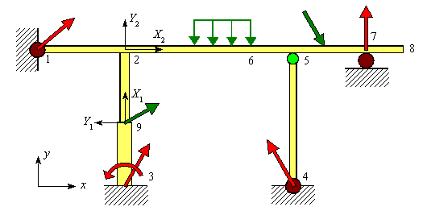

Modélisation des ossatures
Dernière mise à jour : 30 avril 2008
Considérons la structure plane suivante :

Nœuds :
Un nœud peut être :
Les nœuds sont définis par leurs coordonnées dans un repère {O , x y z } appelé repère global.
On appelle nombre de degrés de liberté d'un nœud le nombre de paramètres nécessaires pour définir le déplacement du nœud.
Poutres :
Une poutre est un morceau de structure limité par deux nœuds. Une poutre sera caractérisée par ses nœuds extrémités.
Sur notre exemple, il y a 8 poutres : (1-2) , (2-6) , (6-5) , (5-7) , (7-8) , (5-4) , (9-2) , (3-9)
ATTENTION : l'ensemble (1-8) ne constitue pas une seule poutre (message d'erreur : LA STRUCTURE EST EN PLUSIEURS MORÇEAUX) mais 5 poutres : (1-2) , (2-6) , (6-5) , (5-7) , (7-8).
On appelle nombre de degrés de liberté d'une poutre le nombre de paramètres nécessaires pour définir les déplacements des nœuds de la poutre.
Repère local lié à un poutre :
Liaisons intérieures (relaxations) :
Liaisons de la structure avec l'extérieur :
L'ossature est liée à l'extérieur par :
Charges :